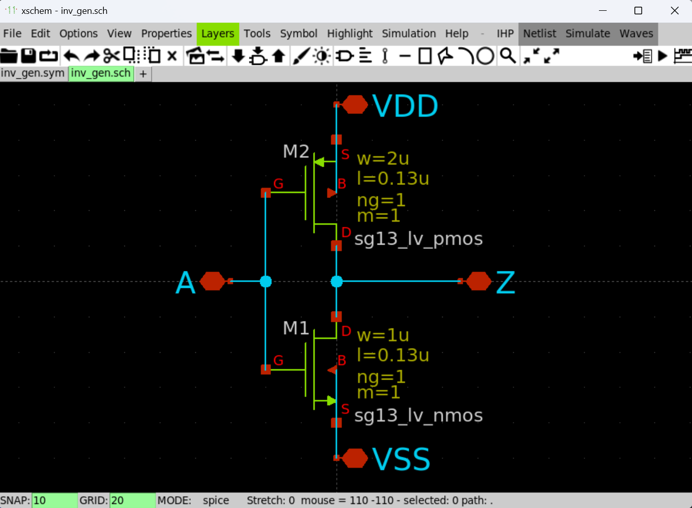
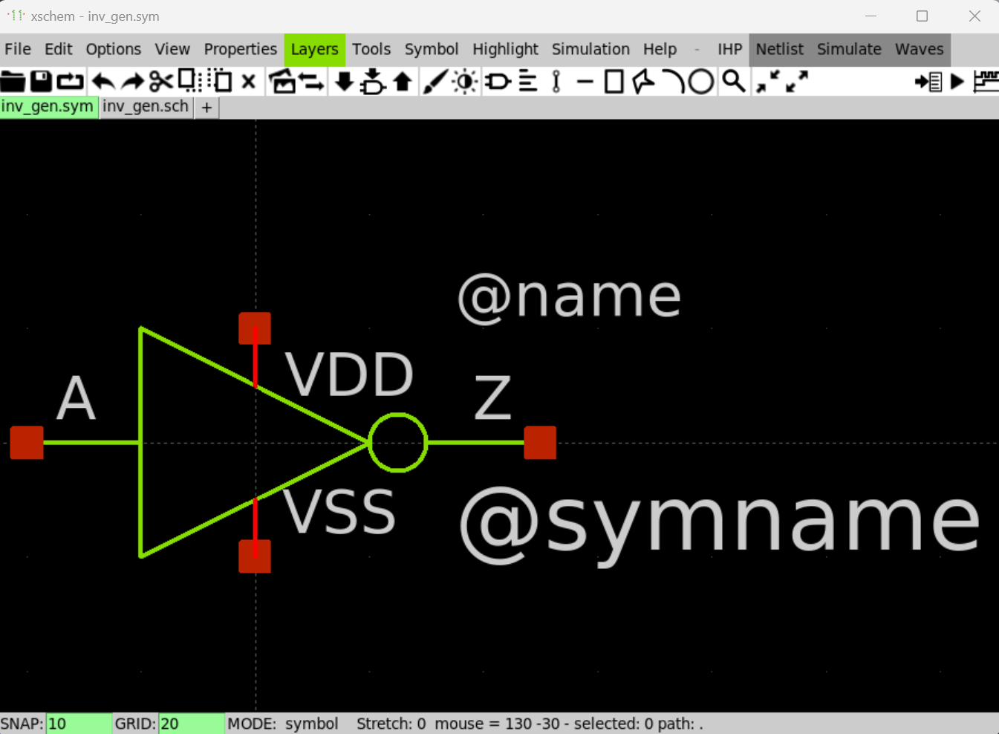
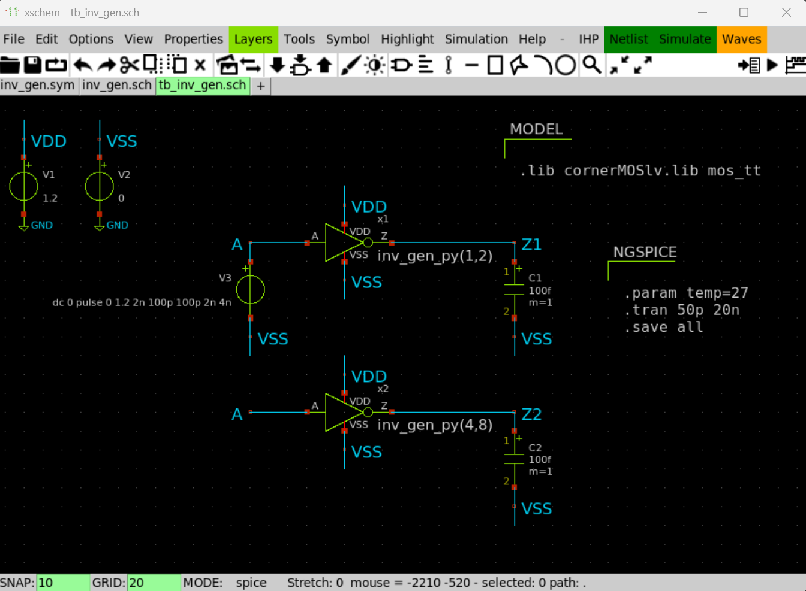
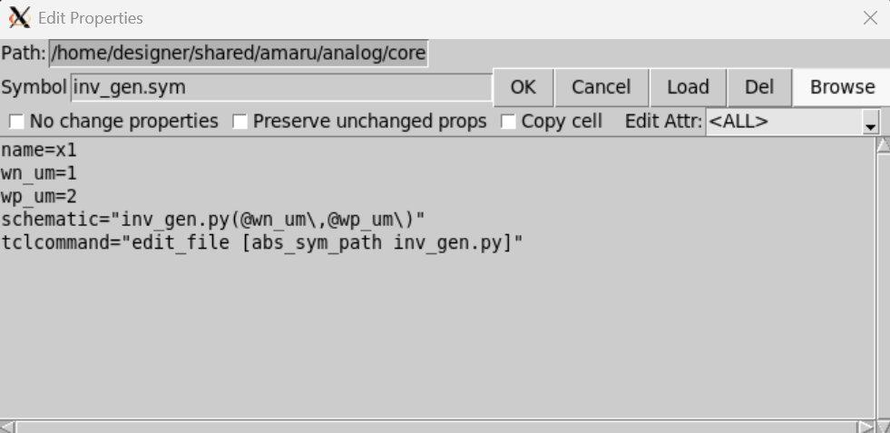
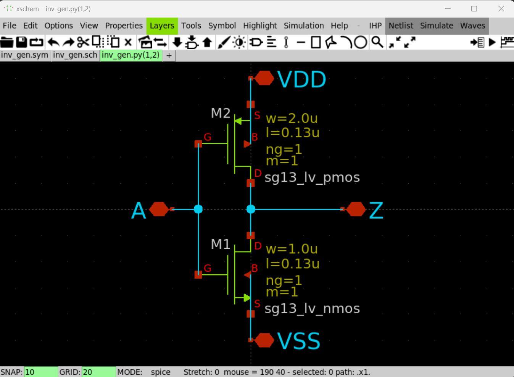
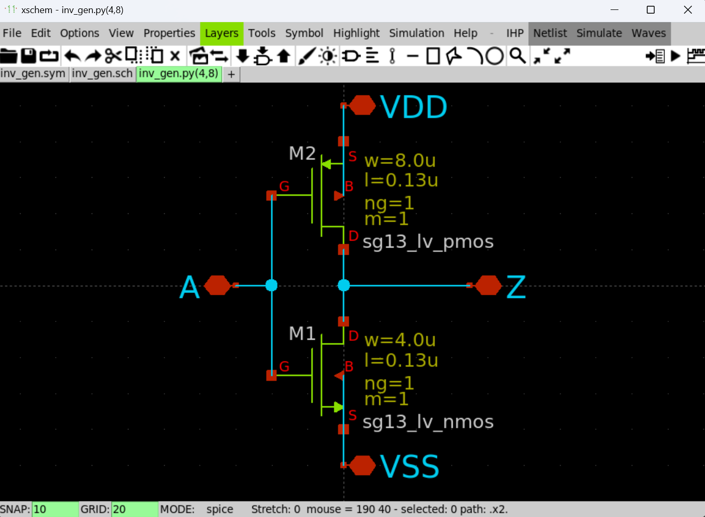

Parameterized Cells (P-Cells) with Xschem
Introduction
Xschem allows the use of P-Cells by means of executing a script which is specified as a property of a component in a schematic. Inputs for the script are also declared as properties. To design these scripts, we first build a set of schematic and symbol templates representing each of the building blocks. Then, we use these templates to create specific scripts which output the blocks’ components as a set of text strings analogous to the process of reading the schematic view of a component. Thus, Xschem produces a netlist which includes the parametrized cells, ready for simulation with Ngspice.
Requirements
- WSL-2
- Docker Desktop
UNIC-CASSorIIC-JKUOpen-Source IC Tools docker container.- Python
- VS Code
Example: P-Cell of Inverter
Schematic & Symbol Templates
1. Create a new schematic inv_gen.sch in your design folder. The schematic should look like the figure below.

2. Create a new symbol inv_gen.sym in your design folder. The symbol should look like the figure below.

Note
It is important that both the sch and sym files have the same name.
3. Now, let's take a look at both files in a text editor. We can see that both the schematic and symbol views are text files which can be generated by any script.
Python Scripts Outputing Schematic Instances
4. The goal is to create a Python script which output the inverter instances as a set of text strings. With this in mind, we create the file inv_gen.py with the following content:
End of Line characters in Linux and Windows
Make sure you create the Python file from your Linux terminal to make sure of the end-of-line character which could affect the execution of the script.
Setting Up the P-Cell in Another Schematic
5. Let's create a testbench to test our P-Cell inv_gen. Create a new schematic tb_inv_ge.sch to perform a transient simulation. It should look like the figure below.

6. Select one of the inv_gen instances and open its properties by pressing q. Edit the properties according to the figure below.

7. The table below shows each of the properties. Notice how we define the width of each transistor as inputs of the Python script, and pass those variables to the script using @[variable]\.
| Property | Description |
|---|---|
| wn_um | Width of nmos in um. |
| wp_um | Width of pmos in um. |
| schematic | File name of the Python script with parsed variables. |
| tclcommand | TCL command that executes the script. |
When is the Script Executed?
8. The Python scripts is executes during:
* Netlist process.
* Descending into the schematic.

